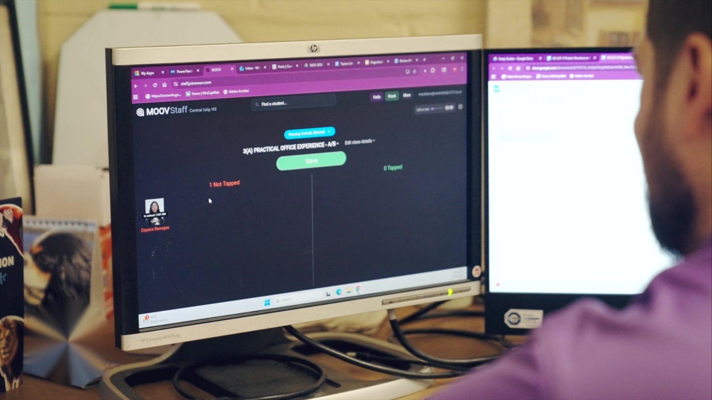

A substitute walks into a room of thirty students they've never met and is handed a roster. Then they're expected to take accurate attendance.
It's a setup that almost guarantees mistakes. The sub doesn't know any faces, so they're reading names off a list and hoping the right hands go up. A student can answer to the wrong name. A friend can cover for someone who skipped. And the office often doesn't find out the count was wrong until later, when a parent calls or the numbers don't add up.
This is one of the quieter accuracy problems in a school, and it's exactly where MOOV's photo-based attendance makes the biggest difference.
Designed with substitutes in mind

Anyone who’s seen Ferris Bueller’s Day Off knows the sound of attendance gone wrong. “Bueller? ... Bueller? ... Bueller?” A flat voice reading names into a room that isn’t answering. It’s a joke, but it’s also how a lot of sub days still start, because a substitute usually can’t get into the school’s student information system. No login, no real roster to work from, so they fall back on calling names out loud and hoping.
That’s where the chaos comes from. The sub is locked out of the one system that holds the real information.
MOOV was built to fix that. An administrator can assign a substitute in the platform in a few clicks, and from there the sub logs in and gets the same view the regular teacher has for the day. They see the roster, the student photos, and who’s tapped in, all in one place. It can also be set period by period, so a sub covering third and fourth period gets access to exactly those classes and nothing else.
So instead of a verbal roll call and a guess, a substitute walks in with the same tools the regular teacher uses every day.
The photo is the whole point
With MOOV, students take their own attendance by tapping in with their ID card when they enter the room. The moment they tap, their name and photo appear on the screen.
That photo matters most when the adult in the room doesn't know the students. A regular teacher recognizes their kids. A substitute doesn't. So when a student taps in and their picture pops up, the sub can see at a glance that the face in the room matches the face on the screen. They're not guessing off a name on a list anymore. They can actually confirm the right student is there.
Adam Parente, a teacher at Comsewogue High School, described why the pictures make it easier even for the regular staff:
"It's easier on teachers to take attendance when we get to see the kids' pictures pop up, and having the present and the absent side is a lot clearer."
For a sub, that clarity is the difference between an accurate count and a hopeful one.
Kids can't tap in for each other
Here's the part students figure out fast. Because each tap pulls up that student's own photo, you can't tap in with a friend's card to cover for them.
If a student tries to use someone else's ID, the wrong face shows up on the screen, right next to the name. The sub sees the mismatch immediately. So the old tricks, tapping in a buddy who's actually skipping or borrowing a card, don't work. And once students know that, most of them stop trying. The accountability does its job before anyone has to have a conversation about it.
That's a real shift. It means a sub day is no longer a free pass to disappear.
The sub just verifies, and the office can trust it
Because the students do the tapping, the substitute's job gets simple. They glance at the screen, confirm the faces match the names, and send. No going student by student down a list they can't match to real people.
And the accuracy holds up all the way to the front office. Jennifer Greco, who works in the attendance office at Kings Park High School, told us this is one of the biggest wins with a sub in the room:
"If there's a substitute, the students can still tap into a classroom, and I can still verify that they are there. So if the sub is still circling that they're absent, but yet a student tapped in, it makes the accuracy better."
So even if a sub marks something wrong on paper, the tap-in record shows who was actually present. The office isn't stuck choosing between a substitute's guess and a parent's phone call. They have the real picture.
Why it matters
Substitute days are when attendance usually gets shaky. A photo-based system fixes that from both ends. The sub gets an easy, accurate way to confirm who's in the room without knowing a single face. The office gets a record it can trust instead of reconciling later. And students know a sub in the room doesn't mean the rules are off, because the photo makes sure the right person is tapping in.
Accurate attendance shouldn't depend on whether the regular teacher is there that day. With MOOV, it doesn't.